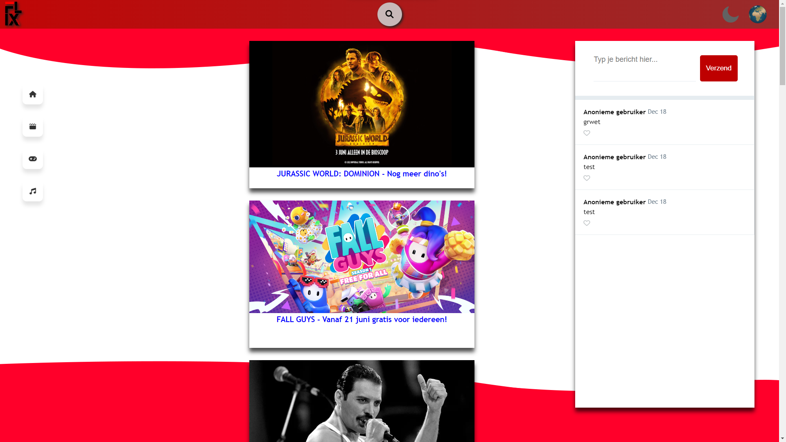

FLIX-MEDIA
In leerjaar 1 aan het einde van het leerjaar maakte we kennis met de proftaak, dit deden we in een groep van 4 man. Het idee was om een website te maken waarin je nieuws kon lezen over films, muziek en games. Ook kan je inloggen met een account en chatten met andere gebruikers. Voor dit project heb ik uiteindelijk een 7.5 gekregen.
